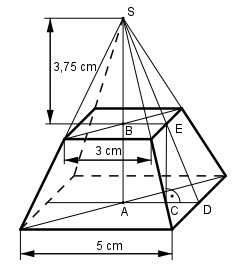

Aufgabe 252 Wie groß sind das Volumen V und die Mantelfläche M des quadratischen Pyramidenstumpfes?

Pyramidenstumpf: Strahlensatz: AD = 5 cm/2 = 2,5 cm BE = 3 cm/2 = 1,5 cm AD AS ---- = ---- |*BS BE BS AD * BS 2,5 cm * 3,75 cm AS = ----------- = ------------------- = 6,25 cm BE 1,5 cm AB = AS - BS = 6,25 cm - 3,75 cm = 2,5 cm V = V = cm3 2,5 V = ----- * (25 + 5 * 3 + 9) cm3 3 V = 40,8 cm3 M = 4 * Trapez Satz von Pythagoras im Dreieck CDE: CD = AD - BE = 2,5 cm - 1,5 cm = 1 cm CE = AB = 2,5 cm DE2 = CD2 + CE2 = 12 cm2 + 2,52 cm2 = 7,25 cm2 |√ DE = 2,7 cm 5 cm + 3 cm M = 4 * -------------- * 2,7 cm = 43,2 cm2 2